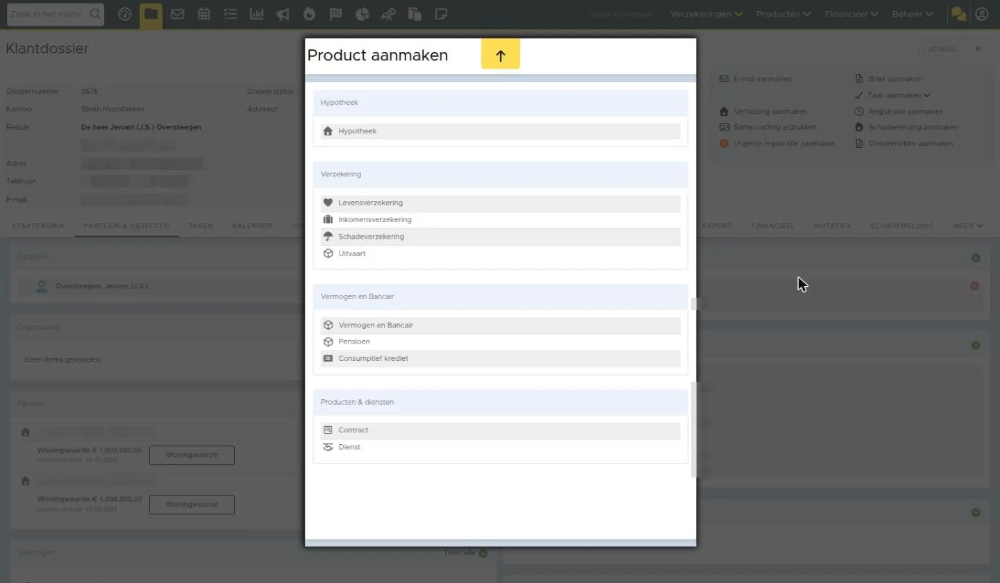
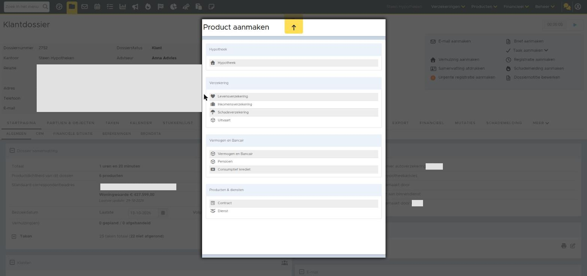
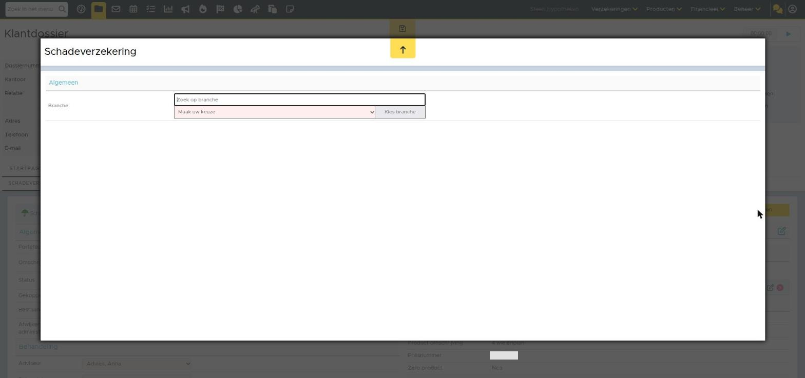

Schadeverzekering toevoegen
Als je een schadeproduct wilt toevoegen voor een klant, doe je dit in een klantdossier. Het is ook mogelijk om alle ingevoerde schadeverzekeringen in jouw eBlinqxomgeving te beheren. Dit doe je in de beheermodule 'Productnaambeheer schadeverzekeringen'.
Toevoegen in klantdossier
Om voor een klant een schadeverzekering op te slaan, maak je in het klantdossier een schadeproduct aan. Dit doe je via de startpagina van het dossier, klik hier op de knop "Nieuw product".
Algemene gegevens invullen
Vul eerst nauwkeurig alle velden in aan de linkerkant van het scherm.
Indien de maatschappij nog niet bestaat, lees je hier hoe je een nieuwe verzekeringsmaatschappij aanmaakt.
Klik linksboven op het opslaanicoon om op te slaan als alles is ingevuld.
Polisonderdelen/producten aanmaken
Om een polisdeel aan te maken, klik je rechts op de knop "Polis toevoegen". Je komt nu in het onderstaande scherm.
Doorloop vervolgens deze stappen:
- In het zoekveld 'zoek op branche' typ je de branche in of je klikt het dropdownmenu open en selecteert de branche. Vervolgens klik je 'Kies branche'
- Nadat je de branche hebt geselecteerd, wordt de productnaam al deels ingevuld. Wanneer je bijvoorbeeld [0021] Auto selecteert, wordt als productnaam automatisch ‘Auto’ ingevuld. Je moet hier namelijk de specifieke productnaam van de maatschappij invullen (zie ook het i-icoon voor meer informatie). Bijvoorbeeld ‘All Risk Autoverzekering Aegon’.
Afbeelding volgt - Hierbij 2 aandachtspunten:
- de productnaam wordt in combinatie met de branche en de links gekozen maatschappij onthouden. Indien er een nieuw polisonderdeel wordt aangemaakt, zal deze automatisch gevuld worden. Indien er meerdere producten onder de branche zijn aangemaakt kan deze vanuit het dropdownmenu bij Anders, namelijk gekozen worden.
- Indien de maatschappij de productnaam meestuurt in het ADN bericht dan wordt deze automatisch overschreven door de productnaam die de maatschappij meestuurt. Deze productnaam van de maatschappij komt niet te staan in Productnaambeheer schadeverzekeringen.
- Vervolgens vul je de rest in en sla je op. Let op, bij de volgende branches is het verplicht om ook een verzekerde aan te vinken:
- Ongevallen en ziekte 010
- Ongevallen 011
- Ziektekosten 012
- Arbeidsongeschiktheid 013
- Aansprakelijkheid 060
- Gewone aansprakelijkheid 061
- Rechtsbijstand 090
- Buitenland, reizen 600
- Reis en annuleringsverzekeringen, excursies 601
Beheren in beheermodule
De beheermodule is te vinden middels Producten > Productbeheer > Productnaambeheer schadeverzekeringen. Voor de beheermodule heb je de juiste rechten nodig. In de beheermodule kan je schadeproducten toevoegen, wijzigen of verwijderen.
Verwijderen
Het verwijderen van een schadeverzekering doe je met het rode kruisje achter het product.
Wijzigen
Je kunt productnamen wijzigen door in het veld 'productnaam' te typen en vervolgens op te slaan. Hetzelfde geldt voor het veld 'vergoedingspercentage doorlopend'. Dit vergoedingspercentage wordt automatisch in de kaart in de klantdossiers ingevuld.
Toevoegen
Het toevoegen van een product kan middels de knop 'voeg nieuwe productnaam toe'. Deze wordt zichtbaar wanneer je een maatschappij en branche selecteert en vervolgens middels het vergrootglasicoon gaat zoeken.
Polisonderdeel aanmaken vanuit ADN
Daarnaast is het mogelijk om een polisonderdeel aan te maken vanuit de ADN module. Bij het verwerken van een mutatie- of prolongatiebericht heb je de mogelijkheid om een polisdeel aan te maken. Dit via het groene plusicoon achter de post.
Let op! Dit kan alleen indien er al minstens één polis binnen een pakket in eBlinqx aanwezig is. In de batch moet een match gemaakt zijn op het aanwezige polisonderdeel om het groene plusje te tonen. Dit, omdat we matchen op het polisonderdeel rechts in de productkaart. eBlinqx kan dus niet een geheel nieuw pakket of losstaande polis aanmaken, alleen een bestaand pakket inclusief één polis uitbreiden. Ook als een polisonderdeel alleen wordt aangeleverd in de batch en het aanwezige/bestaande polisonderdeel staat niet in deze batch dan zal het groene plusje niet verschijnen.
Daarnaast is het belangrijk dat de maatschappij in de ADN batch de polis niet als losse polis aanlevert, maar als onderdeel van het pakket. Wordt de polis als losse polis aangeleverd en niet als onderdeel van een pakket dan herkent eBlinqx niet dat de polis bij een pakket hoort en zal het groene plusicoon niet verschijnen.
Branche
De branche wordt bepaald aan de hand van welke branche wordt meegestuurd in het AFD-bericht. Staat hier geen branchecode in dan wordt de branche Overig.
Polis al aanwezig
Indien onder het pakket een polis aanwezig is zonder polisnummer of hetzelfde polisnummer (omdat de polis is toegevoegd, nadat de batch is binnengekomen in eBlinqx) wat in de post is meegegeven dan verschijnt er een pop-up scherm na het klikken op het groen plusicoon. Dit pop-up scherm geeft aan dat er een bestaande offerte is gevonden met daarin het pakket en de productdelen.
Via het koppelicoon match je de post alsnog aan het bijbehorende polisonderdeel. Het polisnummer uit ADN wordt dan automatisch in de geselecteerde polis geplaatst. Op deze manier krijg je geen dubbele polisonderdelen. Indien je toch een nieuw polisonderdeel wilt aanmaken, klik je op 'Toch een polis aanmaken'.
Polis in meerdere batches
Let op: de automatische matching gebeurt op het moment dat de batch binnenkomt in eBlinqx. Het toevoegen van een polisonderdeel via het groene plusicoon zorgt er niet voor dat de matching in de batch of andere batches opnieuw gedaan wordt. Stel dat de polis in de batch meerdere keren voorkomt dan staan achter al deze posten het groene plusicoon. Als je bij één van deze posten het polisonderdeel aanmaakt dan zal bij de andere posten niet het groene plusicoon verdwijnen. Je zal dan eerst op de knop 'Polissen opnieuw matchen/Controle journaalpost maken' of de knop 'Opnieuw matchen' moeten drukken om alsnog de match te laten maken en het groene plusicoon te laten verdwijnen. Dit geldt ook voor batches die al zijn binnengekomen en waarin de post ook met het groene plusicoon staat.
Schadeverzekering aanmaken via Aplaza
Bij sommige maatschappijen is het ook mogelijk om een schadeverzekering via Aplaza aan te maken door middel van offerteberichten. Hier lees je er meer over.
Polis gemakkelijk opzoeken
Je kunt het pakket of polis op verschillende manieren opzoeken. De eerste manier is om te zoeken via de module Poliszoeker. Deze kan je bereiken via 'Zoek in menu' of Verzekeringen - Poliszoeker. In de Poliszoeker zoek je gemakkelijk een klant, polis of schademelding op door middel van het zoekfilter. Je kunt bijvoorbeeld zoeken op het polisnummer.
Onderaan komen de zoekresultaten te staan. Door op het pakket- of polisnummer te klikken kom je direct uit in het juiste product.
Je kunt ook zoeken vanuit het Dashboard - zoekfilter Contractnummer. Je krijgt dan de dossiers te zien waarin dit contractnummer voorkomt. Je komt dan echter niet direct uit in het juiste product. Deze moet je dan nog in het dossier opzoeken.
Zo ziet het er nu uit in eBlinqx Connect



